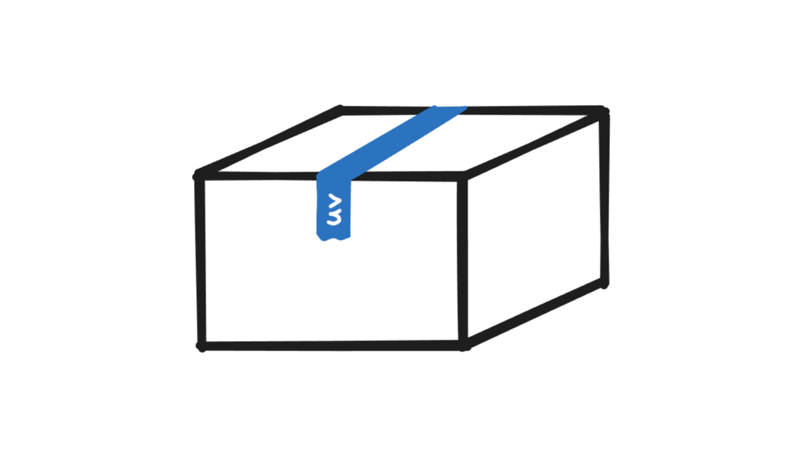

A walkthrough of how to build your custom Python package using uv without publishing it.

Blink and you’ll miss it. Astral’s uv is a performant package & project manager that’s out to replace all the competing tools.
In this blog post, I’ll walk you through a minimal example of how to build your own Python package without uploading it to the internet. While it’s great to get feedback from others when sharing your code, there may be simple reasons why that’s not always possible. For instance, if you’re building an internal package at work or testing something out, it’s usually not for sharing.
Get started
First, let’s start by installing uv on your machine. Assuming you have Python version 3.8 or later installed, an easy way to install uv is to use pip. You can add it to your user environment by running
pip install uv --userin your terminal. Make sure that the local user Python scripts folder (on Windows, typically: %APPDATA%\Python\<Python version>\Scripts) is in your PATH environment variable. You can also install uv directly (see docs), which should work without making additional changes.
Once uv is installed (v0.8.4 used), initialize your project by running:
uv initNow, the directory of your project should look like this:
my-internal-pkg/
├── .gitignore
├── .python-version
├── main.py
├── pyproject.toml
└── README.mdAs we can see, uv init created 5 files and initialized a git repository in the project folder. The important file to focus on is pyproject.toml. This file configures your future package based on what you specify inside. Let’s take a peek at the default structure of this file:
[project]
name = "my-internal-pkg"
version = "0.1.0"
description = "Add your description here"
readme = "README.md"
requires-python = ">=3.12"
dependencies = []Most of the settings in your pyproject.toml are generated and managed by uv. Of course, all settings in this text file can be modified manually. Let’s leave these settings unchanged for now.
Package contents
As a minimal example, let me create a simple Python script that calculates rolling minimum and maximum values for a given column in a polars dataframe. If you’re unfamiliar with polars, consider reading my guide on getting started with polars as a pandas user.
First, let me install polars and set it as a dependency for my package:
uv add polarsThis command installs the package in a virtual environment (.venv folder) and modifies pyproject.toml by adding polars as a dependency. If we take a look at the pyproject.toml file now, the dependencies setting should look something like this
dependencies = [
"polars>=1.31.0",
]Next, let me delete the main.py file since it’s not needed. I’ll then create a folder inside the root directory of my project and name it my_internal_pkg. I’ll also place an empty __init__.py file inside the newly created folder.
My goal is to write a function that calculates rolling min and max values—I’m going to place this function in df_helpers.py. Here’s the updated file tree:
my-internal-pkg/
├── .venv/
├── my_internal_pkg/
│ ├── __init__.py
│ └── df_helpers.py
├── .gitignore
├── .python-version
├── pyproject.toml
└── README.mdNow onto the contents of df_helpers.py. Keeping it really simple, below is the rolling min max function I placed in this Python script:
import polars as pl
def rolling_min_max(df: pl.DataFrame, col: str, window: int = 3) -> pl.DataFrame:
"""Get rolling min and max values of a specific column"""
return df.with_columns(
pl.col(col).rolling_min(window_size=window).alias(f"{col}_roll_min"),
pl.col(col).rolling_max(window_size=window).alias(f"{col}_roll_max")
)Now that we have something to be packaged, we’re almost set. There are some final touches we need to make to the pyproject.toml file.
Finalizing pyprojects.toml
Since this tutorial is aimed at building a package locally, consider adding classifiers = ["Private :: Do Not Upload"] into the [project] section in the config file:
[project]
name = "my-internal-pkg"
version = "0.1.0"
description = "Add your description here"
readme = "README.md"
requires-python = ">=3.12"
dependencies = [
"polars>=1.31.0",
]
classifiers = ["Private :: Do Not Upload"]This labels the package as “private” and adds another layer of defense against accidentally publishing your package to PyPI (see docs).
Next, let’s set up the [build-system] section. uv’s own backend has recently been marked as stable, and it seems reasonable to believe that it’s going to become the default in the future. In the meantime, let me use hatchling from the Python Packaging Authority, which uv authors considered reasonable as a build backend. As a sidenote, I was curious which prominent projects also use this build system: JupyterLab, for example.
To use hatchling as the build backend, we need to place the following section into the .toml file
[build-system]
requires = ["hatchling >= 1.26"]
build-backend = "hatchling.build"Additionally, we have to specify the folder containing the core of our package (my_internal_pkg/ in our case) because the build system expects to find the src/ folder by default. Many prominent projects like django or pandas don’t follow these defaults either and instead place their scripts into django and pandas subfolders, respectively.
Consequently, we also need to add 1 more section to pyproject.toml:
[tool.hatch.build.targets.wheel]
packages = ["my_internal_pkg/"]For additional configuration like excluding files/folders in the source distribution, consider taking a look at hatch docs.
We’re almost at the finish line. For completeness, the final pyproject.toml file looks like this:
[project]
name = "my-internal-pkg"
version = "0.1.0"
description = "Add your description here"
readme = "README.md"
requires-python = ">=3.12"
dependencies = [
"polars>=1.31.0",
]
classifiers = ["Private :: Do Not Upload"]
[build-system]
requires = ["hatchling >= 1.26"]
build-backend = "hatchling.build"
[tool.hatch.build.targets.wheel]
packages = ["my_internal_pkg/"]Build
With pyproject.toml set up, we should now be able to build the package. What’s going to happen now is that the build command will create a folder named dist/. Inside this folder, we’re going to see our package in a .tar.gz (source distribution) and .whl (wheel) format. While the difference between these is beyond the scope of this post, if you’re going to be distributing your package locally—to other colleagues or your other systems—consider using the .whl file because it simplifies the process of installing the package. Note that both of these are ultimately archives, so you can take a look inside each to see the differences. To learn more about this topic, I would recommend reading this excellent article on Real Python.
Enough stalling, let’s build the package. Open up a terminal in the root directory of the project, and simply type:
uv buildIf successful, the dist/ folder should pop up and the two distributions should be inside:
dist/
├── .gitignore
├── my_internal_pkg-0.1.0.tar.gz
└── my_internal_pkg-0.1.0-py3-none-any.whlInstall
To install the package, grab the .whl file and place it wherever you need it installed. You can then install it using pip (or uv pip) by running:
pip install "path/to/my_internal_pkg-0.1.0-py3-none-any.whl"That’s it?
Yes, that’s it! With just a few commands and a handful of lines of configuration, we’ve built a Python package from scratch using uv.
You should now be able to import your package in the environment you installed it to using
import my_internal_pkgThis was just a minimal example of how to get started building packages. Consider browsing through repositories of popular Python packages to see how they do it. Additionally, for a tutorial on how to publish your package, take a look at uv docs.
If you have any suggestions or corrections, feel free to let me know in the comments on GitHub!